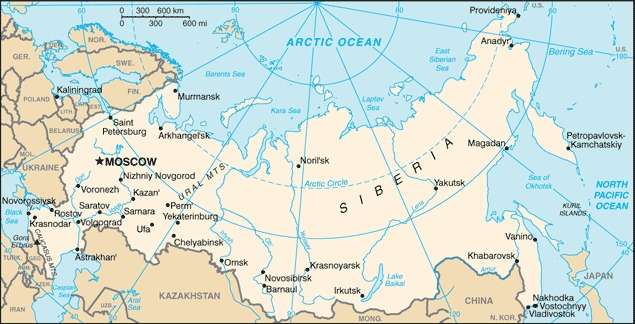

Genel Bilgiler
Rusya, Kuzey Avrasya’da yer alan federal bir cumhuriyettir. Başkenti Moskova’dır. Yaklaşık 146 milyon nüfusa sahiptir ve dünyanın yüzölçümü bakımından en büyük ülkesidir. Resmî dili Rusça’dır ve para birimi Rus Rublesi (RUB)’dir. Rusya, BM, G20 ve diğer uluslararası kuruluşlarda aktif bir rol oynar ve enerji kaynakları açısından zengindir.
Rusya, kuzeyde Arktik Okyanusu, batıda Norveç, Finlandiya, Estonya, Letonya, Litvanya, Polonya (Kaliningrad) ve Belarus, güneyde Ukrayna, Gürcistan, Azerbaycan, Kazakistan, Çin, Moğolistan ve Kuzey Kore ile çevrilidir. Doğuda Pasifik Okyanusu’na kıyısı vardır. Yüzölçümü yaklaşık 17.098.242 km²’dir ve Sibirya, Ural Dağları ve geniş bozkır alanlarıyla çeşitlenir.
Başkent: Moskova
Kıta: Avrupa/Asya
Yüzölçümü: 17.098.242 km²
Nüfus (2025): 144.000.000

Bayrak Anlamı: Rusya bayrağı yatay üç eşit şeritten oluşur: beyaz, mavi ve kırmızı. Beyaz barışı ve saflığı, mavi sadakati ve vatanseverliği, kırmızı ise cesareti ve kahramanlığı simgeler. Bayrak ilk olarak 1696’da kullanılmaya başlanmış ve 1991’de resmî hâle gelmiştir.
Rusya Haritası
Ekonomi
Rusya ekonomisi doğal kaynaklara dayanır ve dünyanın en büyük enerji ihracatçılarından biridir. Petrol, doğal gaz ve kömür ekonominin temelini oluşturur. Sanayi sektörü özellikle makine, kimya ve savunma ürünlerinde güçlüdür. Tarımda tahıl, patates ve şeker pancarı öne çıkar. Hizmet sektörü ise finans, telekomünikasyon ve turizm alanlarında gelişmektedir.
| Yıl | İhracat (Milyar $) | İthalat (Milyar $) |
|---|---|---|
| 2019 | 410 | 250 |
| 2020 | 380 | 220 |
| 2021 | 430 | 280 |
| 2022 | 450 | 300 |
| 2023 | 460 | 310 |